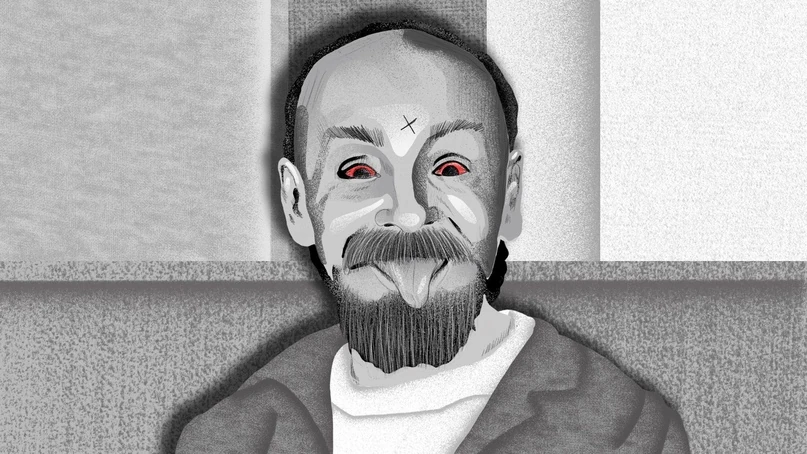
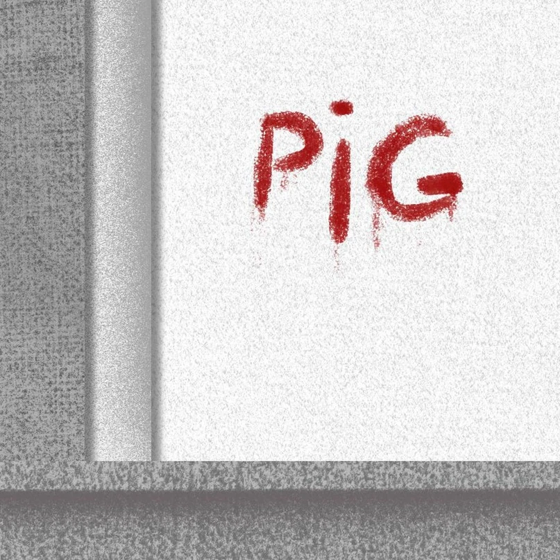

«Адвокат дьявола» Нуэль Эммонс — о Чарльзе Мэнсоне, самом опасном человеке на Земле
В конце июля и августе 1969 года произошло восемь весьма загадочных убийств. Они были совершены со звериной жестокостью, вот только дикие звери не пользуются ножами и пистолетами, а после убийства не оставляют посланий, неровно выведенных кровью жертв. Среди убитых были беременная Шэрон Тейт-Полански и ее друзья. Через некоторое время полиция арестовала несколько человек, оказавшихся связанными тесными узами «семьи», которую возглавлял Чарльз Мэнсон. Все они были приговорены к смертной казни, которую впоследствии заменили пожизненным заключением. СМИ с удовольствием смаковали подробности убийств, что во многом и сделало Мэнсона всемирно известной фигурой.

Нуэль Эммонс познакомился с Чарльзом Мэнсоном задолго до этих событий, угодив в тюрьму за автомобильную кражу. Второй раз их пути пересеклись в 1960 году, когда Эммонс вновь оказался в камере. После этих перипетий он стал заниматься фотожурналистикой и сотрудничать с несколькими американскими и европейскими журналами. В 1979 году Эммонс вышел на Мэнсона, отбывающего пожизненное заключение. Их продолжительные беседы и легли в основу книги Without Conscience: Story of Charles Manson in His Own Words, увидевшей свет в 1987 году.
Эммонс не собирался увековечивать дело «самого опасного человека на Земле», он хотел показать другую сторону человека, которого сравнивают с дьяволом — ведь и у дьявола, если он существует, была своя история.
19 апреля 1971 года в Лос-Анджелесе, Калифорния, Чарльз Майлз Мэнсон услышал, как верховный судья Чарльз Олдер выносит свое окончательное решение: «Я твердо убежден, что смертная казнь является не только подходящим наказанием, сами обстоятельства практически заставляют сделать именно этот выбор. Не могу не согласиться с прокурором в том, что если не этот случай подходит для смертной казни, то каким же тогда он должен быть? Управлению исправительных учреждений поручено доставить Вас под надзор начальника тюрьмы штата Калифорния в Сан-Квентине, чтобы он предал Вас смерти в порядке, предписанном законом штата Калифорния».
Что такое следственные изоляторы, залы суда и тюрьмы, я узнал в двенадцать лет — с тех пор это стало моей жизнью. Когда мне исполнилось шестнадцать, я перестал бояться чего бы то ни было, чем могло меня попотчевать тюремное начальство. Но вот заключенные оставались непредсказуемыми, и это делало мою смерть в тюрьме вполне реальной перспективой, особенно после того, как обвинитель, пресса, телевидение и кое-кто из сотрудников Управления исправительных учреждений заронили такую мысль в сознание других заключенных своими заявлениями в духе:
«Природа преступлений Мэнсона Такова, что она делает его привлекательной персоной в глазах других осужденных, желающих привлечь к себе внимание и прославиться».
Выслушивая смертный приговор из уст Олдера, я осознавал, что за этим решением стоит вся судебная система Калифорнии, и все же я знал, что штат Калифорния не казнит меня. Умру в тюрьме, наверное. Но быть казненным — увольте!
Я оказался прав: и года не прошло с тех пор, как я вошел в число смертников, как действовавший на тот момент в Калифорнии закон о смертной казни был отменен. Все осужденные, ожидавшие исполнения смертного приговора, автоматически получили пожизненные сроки. Для большинства бывших смертников отмена смертной казни означала возрождение надежд. Я же не чувствовал особого восторга по этому поводу, думая лишь о том, с чем теперь мне придется бороться.
Паранойя крепко сидела во мне, ибо из-за особенностей преступлений, мощной огласки, которой сопровождались мой арест и растянувшиеся судебные слушания, имя Чарльза Мэнсона стало олицетворением ненависти и страха для тогдашнего поколения. Это крест, который я вынужден нести на себе с момента ареста в 1969 году. Время, проведенное в камере смертников — из-за усиленной охраны и изоляции от общей массы заключенных, было самым спокойным за последние семнадцать лет моей жизни. Я мог наконец расслабиться. Но теперь я стал особой фигурой в системе исправительных учреждений Калифорнии и был вынужден отбывать срок наравне с остальными, увертываясь от дротиков, ножей и угроз покончить со мной, которые я получал от других заключенных, и в то же время следить за каждым тюремщиком, приближавшимся ко мне.

Меня зовут Чарльз Майлз Мэнсон. Когда я веду этот рассказ, мне пятьдесят один год. Если я вытянусь в полный рост и, чуть сжульничав, приподнимусь на носки, то мой рост будет равняться ста шестидесяти пяти сантиметрам. Думаю, было время, когда я весил порядка шестидесяти трех килограммов, но раз или два — уже в тюрьме — я худел до пятидесяти двух. Я вовсе не похож на громадного увальня с большими кулаками. Но мой голос может звучать громко и раскатисто, как у настоящего великана. В 1970 году, накануне и во время судебного процесса, завершившегося для меня обвинительным приговором, моя фотография появлялась на обложках журналов, а имя мелькало в газетных заголовках чаще, чем реклама колы. В большинстве материалов и статей меня изображали так, словно я уже родился с клыками и рогами. Писали, будто моя мать была шлюхой, что с рождения у меня был сопливый нос, а если меня пеленали, то в пеленках оказывалось полно дерьма, причем оно нередко текло у меня прямо по ногам. Всех заставили поверить, что я попрошайничал на улицах, когда мне не было еще и пяти лет, и воровал еду, чтобы не подохнуть с голоду.
В семь лет у меня уже были первые приспешники. Они занимались воровством, а добычу приносили мне. Мне не исполнилось и девяти, а я уже взялся за пистолет и грабил стариков и слабых. В возрасте двенадцати лет я изнасиловал дочку проповедника и задушил ее младшего брата, чтобы он не заложил меня. В тринадцать лет на меня уже накопилось такое полицейское досье, что я вполне мог войти в штат Никсона или возглавить мафию. За моими наркотиками мальчики из церковного хора выстраивались в ряд и воровали для меня церковные пожертвования. Среди моих подружек, которым я основательно затуманил мозги, были десяти- и двенадцатилетние соседские девочки. Чтобы доказать свою любовь, они приносили мне деньги, заработанные проституцией и съемками в порнофильмах.
Разве не таким вы представляли меня? Разве прославленный прокурор, судьи, мои якобы последователи и пресса нарисовали не такой портрет?
Изменится ли что-нибудь, если сказать, что я не выбирал свою мать? Или что, будучи внебрачным ребенком, я был вне закона с рождения? Что во время так называемого формирования личности я не контролировал свою жизнь? Эй, послушайте, к тому моменту, когда я научился думать и запоминать, меня оставляли с совсем незнакомыми людьми (их не знали даже знакомые мне взрослые), и они помыкали мной, как хотели. С самого рождения меня чаще всего отталкивали, а не любили и ласкали. Вы можете это понять? Вряд ли. И уже поздно, теперь мне все равно! Но меня спрашивают, откуда взялись моя философия, антисоциальное поведение и ожесточенность. Вовсе не пытаясь изменить общественное мнение, я расскажу кое-что о своей жизни с помощью парня, который пишет эту книгу. Вы уже наверняка читали что-нибудь на тему «Чарли то, Мэнсон се», и историю моей семьи вам уже описали, но любой человек в реальной жизни всегда отличается от того, каким его преподносят или считают.
Уже написаны книги, и пишутся новые; появились фильмы, и, без сомнения, их будет еще больше. СМИ заполучили марионетку, которой можно вертеть как угодно, чучело, на котором можно отрабатывать удары. Все, кому не лень, подхватывали мои слова и мысли, перевирали и публиковали их с совершенно другим смыслом. Искаженная информация, сенсации и фальшивые цитаты, приписанные мне, печатались в прессе ежедневно. Их было так много, что жизнь на Земле потеряла для меня всякий смысл. Не вижу его я и сейчас. Мое тело остается в плену у общества, порождающего людей, подобных мне, но мой разум проник в царство мысли, далекое от Земли. Я понял одну вещь: чтобы оставаться собой, следует не произносить ни слова, не издавать ни звука, не делать никаких движений — даже не моргать глазом, ибо, если сделать это в присутствии другого человека, о тебе тотчас сформируется какое-то мнение. Обязательно найдется какой-нибудь мнимый психолог, который проанализирует и опишет тебя таким, что ты станешь уже не тем, кто есть на самом деле.
Как я уже говорил, СМИ разошлись не на шутку. Ничтожества разбогатели и обрели влияние. Так называемая «семья Мэнсона» разгромлена, а ее участники переметнулись на другую сторону, свидетельствуют в пользу штата — так лгут в судах. Они понаписали книжек и заработали денег на интервью, где приуменьшили свою роль, свалив все на Чарли. Юристы, как со стороны обвинения, так и со стороны защиты, сколотили себе состояние благодаря участию в суде над «семьей Мэнсона». У меня такое чувство, будто общество изнасиловало и раздавило меня. Меня отымели прокурор и друзья. Вытянули всю душу суды. Меня избивали тюремщики и выставляли напоказ в тюрьмах. Тем не менее моих слов никогда не печатали и не передавали так, как они были сказаны мной. Так что с этой точки зрения мне нечего выгадывать или терять, рассказывая все так, как, мне кажется, было на самом деле.
Тридцать семь из своих пятидесяти одного года жизни я провел в исправительных учреждениях для несовершеннолетних, семейных приютах и тюрьмах. Последние семнадцать лет я живу как зверь, посаженный в клетку в зоопарке.
Наши клетки почти одинаковы, они сделаны из бетона и стали. Моя кормежка не отличается от кормежки животных: мне дают еду через решетку и по расписанию. Охранники расхаживают около моей клетки, убеждаясь, что она заперта, а я не сдох. Люди, приходящие в эту тюрьму, независимо от цели посещения, все как один спрашивают: «А где держат Чарльза Мэнсона? Можно пройти мимо его камеры?» И, как добрые служители зоопарка, тюремщики провожают их к моей камере. Поглазеть на Чарльза Мэнсона в тюремной клетке — это все равно, что увидеть редкостное дикое животное. Без этого посещение тюрьмы было бы неполным. Чтобы удовлетворить собственное любопытство, я смотрюсь в зеркало: вдруг у меня выросли рога или торчат клыки изо рта? Если зеркало не лжет, у меня нет ни того, ни другого. Я осматриваю тело, сравнивая его с телами тех, кто остановился и уставился на меня. Теми же самыми глазами, способными видеть, моргать и пристально смотреть, как глаза тех, кто стоит перед моей камерой, я вижу нормальное тело, две руки, две ноги, голову, на которой в обычных местах растут волосы, а также находятся глаза, нос, уши и рот — все как у всех. Я ничем не отличаюсь от людей, остановившихся для того, чтобы метнуть в меня свой наполненный ненавистью взгляд. Или от вас, кому интересно то, что я должен сказать.
Если бы журналисты и иже с ними с самого начала придерживались фактов, установленных следователями, Чарльза Мэнсона уже никто бы не помнил. Но из-за того, что каждый журналист, автор каждой книги и каждый телевизионный ведущий преувеличивал, измышлял, раздувал ради сенсационного эффекта и приправлял материал собственной враждебностью, я и те, кто жил вместе со мной, стали значить больше, чем на самом деле. Быть может, это делалось намеренно.
В большинстве случаев меня и арестованных со мной людей описывали как психопатов со съехавшей от наркотиков крышей. В июньском номере журнала Rolling Stone за 1970 год была опубликована статья под заголовком «Специальный репортаж: Чарльз Мэнсон — невероятная история самого опасного человека на Земле». Впрочем, были и публикации, где высказывалось предположение о том, что в основе преступлений лежал какой-то принцип. Так, в февральском номере Tuesday's Child за 1970 год говорилось, что, возможно, я больше похож на революционера-мученика, чем на безжалостного убийцу. Естественно, вместе кое с кем из разделивших со мной безумие я с жадностью ухватывался за любые материалы, где хотя бы отдаленно проглядывалось сочувствие.
Тогда я не прочел ни той, ни другой статьи, хотя был наслышан о них. Но с конца 1969 года я читал похожие заголовки и смотрел на собственные фотографии почти ежедневно. Везде меня называли культовым вождем хиппи, программировавшим людей убивать для него, человеком, который несет ответственность за убийства Тейт — Ла Бьянка. Меня изображали каким-то мистическим сверхчеловеком, способным одним своим взглядом заставить другого человека выполнить любую мою прихоть. Из меня сделали очередного Крысолова, подбивавшего молодняк на преступления и жестокость.
Зная, что я за человек, как я рос и каким был, я считаю эти байки смехотворными. Я прихожу в ужас от читателей, которые глотают всю эту ложь, не моргнув глазом, и верят ей, как Библии. Но я не могу не отдать должное ребятам, создавшим мой образ, этим виртуозам пера, которые высосут из пальца какую угодно историю и сделают из мухи слона. Я не должен винить читателей, ведь я сам отчасти попался на эти выдумки. Но когда я допускаю мысль, что действительно могу обладать всеми приписанными мне способностями, и пытаюсь опробовать их на своих тюремщиках, он или она хлопают дверью у меня перед носом. Так происходит возврат к реальности, и я осознаю, что я всего лишь то, чем был всегда, — «недоделанное ничтожество».